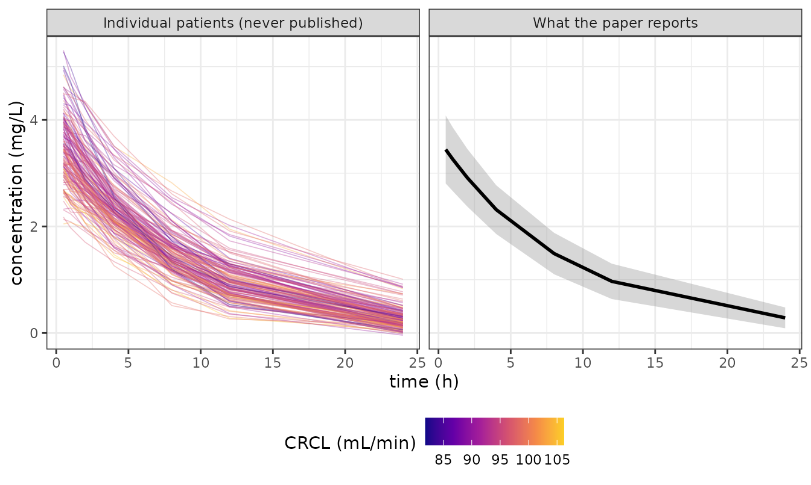
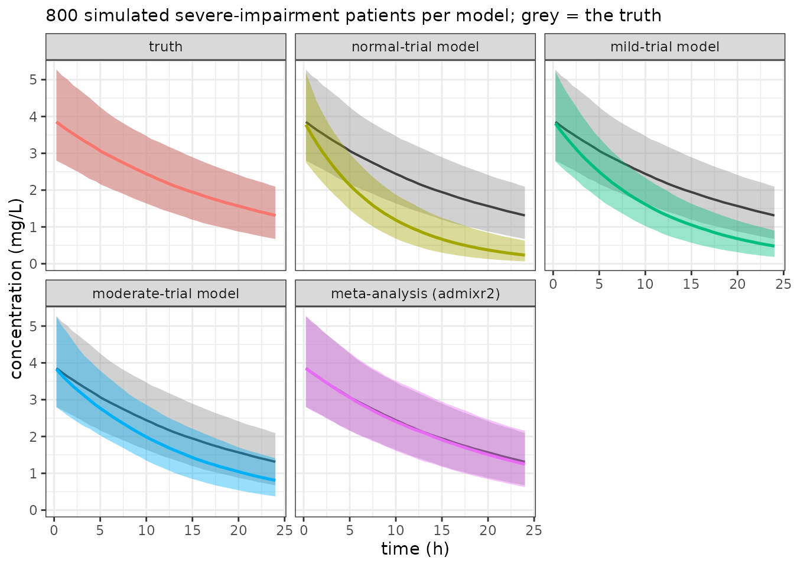

A dose for a patient nobody studied
A woman is admitted with a creatinine clearance of 21 mL/min. The drug she needs is renally cleared, and the label gives one dose: 200 mg, what every trial used.
Three trials have been published — normal renal function, mild impairment, moderate. None enrolled anyone like her, and none reported a renal effect at all, because within each trial creatinine clearance barely varied and each analyst sensibly left it out.
So you have three population models that disagree about clearance by nearly a factor of two, and not one can say why. This vignette recovers the renal effect none of them contains — from the three papers alone — and turns it into a dose.
The world those trials sampled
Checking the answer needs a truth to check against, so the patients are simulated. Weight and creatinine clearance are correlated, so they are drawn jointly through a Gaussian copula: each keeps its own lognormal margin, the dependence going on the latent scale.
The truth, unknown to all three analysts, is CL = 5 L/h and V = 50 L at 70 kg, allometric weight scaling, a renal exponent of 0.6, and men clearing about 20% faster. The trials differ only in which slice of renal function they sampled — which alone is enough to make their answers disagree.
set.seed(11)
TIMES <- c(0.5, 1, 2, 4, 8, 12, 24); DOSE <- 200
CL70 <- 5; V70 <- 50; BCRCL <- 0.6; BSEX <- 0.18
OM_CL <- 0.05; SD_ADD <- 0.08
R <- matrix(c(1, .45, .45, 1), 2, 2,
dimnames = list(c("WT", "CRCL"), c("WT", "CRCL")))
# A cohort of virtual patients: lognormal margins for weight and renal
# function, joined by the Gaussian copula above; sex drawn independently.
# Used again later for the severe cohort, so it takes its medians as arguments.
draw_cohort <- function(n, wt_median, wt_cv, crcl_median, crcl_cv,
p_male = 0.55) {
# a Gaussian copula, one step at a time: correlated normals, turned into
# correlated uniforms, then pushed through each covariate's own margin
z <- matrix(rnorm(2 * n), nrow = n, ncol = 2) %*% chol(R)
u_wt <- pnorm(z[, 1])
u_crcl <- pnorm(z[, 2])
data.frame(
WT = qlnorm(u_wt, meanlog = log(wt_median), sdlog = wt_cv),
CRCL = qlnorm(u_crcl, meanlog = log(crcl_median), sdlog = crcl_cv),
SEX = rbinom(n, size = 1L, prob = p_male))
}
# Concentration after an IV bolus into one compartment.
conc <- function(t, dose, cl, v) dose/v * exp(-cl/v * t)
# Each patient's true clearance. `bcrcl = 0` gives a model with no renal term,
# which is what all three published models will turn out to be.
patient_cl <- function(cohort, cl_70kg, bcrcl, bsex, omega) {
cl_70kg * (cohort$WT/70)^0.75 * (cohort$CRCL/90)^bcrcl *
exp(bsex * cohort$SEX) *
exp(rnorm(nrow(cohort), 0, sqrt(omega)))
}
# One trial's worth of individual data, in nlmixr2 layout.
run_trial <- function(cohort, first_id) {
reference <- cohort
reference$CRCL <- median(cohort$CRCL)
cl <- patient_cl(reference, CL70, BCRCL, BSEX, OM_CL)
v <- V70 * (cohort$WT/70)
records <- list()
for (i in seq_len(nrow(cohort))) {
y <- conc(TIMES, DOSE, cl[i], v[i]) + rnorm(length(TIMES), 0, SD_ADD)
records[[i]] <- data.frame(
ID = first_id + i,
TIME = c(0, TIMES), # dose row, then observations
DV = c(NA_real_, y),
AMT = c(DOSE, rep(0, length(TIMES))),
EVID = c(1L, rep(0L, length(TIMES))),
CMT = 1L,
WT = cohort$WT[i],
CRCL = cohort$CRCL[i],
SEX = cohort$SEX[i])
}
do.call(rbind, records)
}
cohorts <- list(normal = draw_cohort(260L, 78, .198, 95, .05),
mild = draw_cohort(210L, 76, .198, 62, .05),
moderate = draw_cohort(180L, 74, .198, 38, .05))
trial_data <- list(
normal = run_trial(cohorts$normal, first_id = 10000),
mild = run_trial(cohorts$mild, first_id = 20000),
moderate = run_trial(cohorts$moderate, first_id = 30000))Here is where the information is lost. A published summary keeps the mean and the spread and throws the patients away, so an orderly, explainable difference between individuals survives only as extra width in a grey ribbon — poor clearers at the top, good clearers at the bottom, and nothing in print to say which is which:
d1 <- trial_data$normal[trial_data$normal$EVID == 0, ]
agg <- data.frame(t = TIMES,
m = tapply(d1$DV, d1$TIME, mean),
s = tapply(d1$DV, d1$TIME, sd),
panel = "What the paper reports")
ind <- d1[d1$ID %in% head(unique(d1$ID), 150), ]
ind$panel <- "Individual patients (never published)"
ggplot() +
geom_line(data = ind, aes(TIME, DV, group = ID, colour = CRCL),
alpha = .35, linewidth = .3) +
geom_ribbon(data = agg, aes(t, ymin = m - s, ymax = m + s),
fill = "grey55", alpha = .35) +
geom_line(data = agg, aes(t, m), linewidth = 1) +
scale_colour_viridis_c(name = "CRCL (mL/min)", option = "C", end = .9) +
facet_wrap(~panel) + labs(x = "time (h)", y = "concentration (mg/L)") +
theme_bw() + theme(legend.position = "bottom")
Each analyst now fits their own trial and, as in practice, they do not write the same model. Sato fixes the allometric exponents at the conventional 0.75 and 1; Ito estimates both; Khan looks for a sex effect on volume as well as clearance. Five, seven and six parameters, under different names. None of that has to be reconciled: a study carries its own model, and admixr2 asks for no agreement between sources.
What they do agree on is which covariates they can see. Sex they can see — both sexes are enrolled, so it varies inside their own data. Renal function they cannot — within one cohort it barely moves, and what little movement there is cannot be told from ordinary between-patient variability.
# THREE ANALYSTS, THREE MODELS. They share a drug and nothing else: each wrote
# their own model, with its own parameters, and admixr2 needs no agreement
# between them. What differs here is the covariate structure -- the usual place
# published models diverge -- but the residual and random-effect structure may
# differ just as freely.
# Sato: the conventional write-up. Allometry fixed at the textbook exponents,
# one sex effect on clearance.
sato_model <- function() {
ini({
tcl <- log(4.5)
tv <- log(45)
bsex <- 0.10
add.err <- 0.2
eta.cl ~ 0.1
})
model({
cl <- exp(tcl + eta.cl) * (WT/70)^0.75 * exp(bsex * SEX)
v <- exp(tv) * (WT/70)
cp <- linCmt()
cp ~ add(add.err)
})
}
# Ito: estimated BOTH allometric exponents rather than fixing them. Two extra
# parameters, and a covariance matrix two rows wider than Sato's.
ito_model <- function() {
ini({
tcl <- log(4.5)
tv <- log(45)
bwtcl <- 0.75
bwtv <- 1
bsex <- 0.10
add.err <- 0.2
eta.cl ~ 0.1
})
model({
cl <- exp(tcl + eta.cl) * (WT/70)^bwtcl * exp(bsex * SEX)
v <- exp(tv) * (WT/70)^bwtv
cp <- linCmt()
cp ~ add(add.err)
})
}
# Khan: looked for a sex effect on volume as well as on clearance.
khan_model <- function() {
ini({
tcl <- log(4.5)
tv <- log(45)
bsex <- 0.10
bsexv <- 0
add.err <- 0.2
eta.cl ~ 0.1
})
model({
cl <- exp(tcl + eta.cl) * (WT/70)^0.75 * exp(bsex * SEX)
v <- exp(tv) * (WT/70) * exp(bsexv * SEX)
cp <- linCmt()
cp ~ add(add.err)
})
}
.ctl <- foceiControl(print = 0L, covMethod = "r")
fit_normal <- nlmixr2(sato_model, trial_data$normal, est = "focei",
control = .ctl)
fit_moderate <- nlmixr2(ito_model, trial_data$moderate, est = "focei",
control = .ctl)
fit_mild <- nlmixr2(khan_model, trial_data$mild, est = "focei",
control = .ctl)What goes in each paper is the model and its estimates — all admixr2 needs to put the three into one fit.
# What a paper prints: the model's parameter estimates, and the baseline table
# describing who was enrolled. Nothing about the fit's own covariance is used --
# a study generated from a published model is not a sample, so no standard error
# is reported for a fit that includes one (see the last section).
normal_paper <- list(
CL = exp(fit_normal$parFixedDf["tcl", "Estimate"]),
V = exp(fit_normal$parFixedDf["tv", "Estimate"]),
BSEX = fit_normal$parFixedDf["bsex", "Estimate"],
OM = as.numeric(fit_normal$omega[1, 1]))
mild_paper <- list(
CL = exp(fit_mild$parFixedDf["tcl", "Estimate"]),
V = exp(fit_mild$parFixedDf["tv", "Estimate"]),
BSEX = fit_mild$parFixedDf["bsex", "Estimate"],
OM = as.numeric(fit_mild$omega[1, 1]))
moderate_paper <- list(
CL = exp(fit_moderate$parFixedDf["tcl", "Estimate"]),
V = exp(fit_moderate$parFixedDf["tv", "Estimate"]),
BSEX = fit_moderate$parFixedDf["bsex", "Estimate"],
OM = as.numeric(fit_moderate$omega[1, 1]))
knitr::kable(data.frame(
cohort = c("normal", "mild", "moderate"),
median_CRCL = round(c(median(cohorts$normal$CRCL),
median(cohorts$mild$CRCL),
median(cohorts$moderate$CRCL))),
CL_at_70kg = c(normal_paper$CL, mild_paper$CL, moderate_paper$CL),
V_at_70kg = c(normal_paper$V, mild_paper$V, moderate_paper$V),
sex_effect = c(normal_paper$BSEX, mild_paper$BSEX, moderate_paper$BSEX)),
digits = 3, row.names = FALSE,
caption = "Three independent analyses, three different models, each sound on its own data.")| cohort | median_CRCL | CL_at_70kg | V_at_70kg | sex_effect |
|---|---|---|---|---|
| normal | 95 | 5.256 | 50.036 | 0.163 |
| mild | 62 | 4.146 | 49.940 | 0.115 |
| moderate | 38 | 3.005 | 49.997 | 0.176 |
Read that table as the analysts would have. All three retain the sex effect — a covariate that varies inside every trial, so every trial could see it. On clearance they disagree by nearly a factor of two and none can explain it, the explanation being a covariate that barely moves within any one of them.
That asymmetry is the whole problem. A covariate that varies within a study is estimable there. One that varies only between studies is invisible to each study separately, and visible only to a meta-analysis.
Giving admixr2 the papers, not the patients
Nobody will send you the individual data. What you have is what was
printed: each trial’s model, and the baseline table describing who was
enrolled. That is enough — datagen() turns a published
model plus its population into the (E, V, n) a digitised
figure would have given you.
Each paper becomes one admStudy(): the model it
published, the design, the population it enrolled. Hand
population the cohort itself and the baseline table is read
off it — mean and SD per continuous covariate, the sex split, the
weight–renal correlation, and n from the row count. That
correlation is on the LATENT scale, so on the logs for a
lognormal margin, which is the step easiest to get wrong writing a table
out by hand. With a real paper you have a printed Table 1 instead, and
write that out — see the last section.
The population then enters the fit one of three ways, and which is not a style choice: it follows from what the paper’s own model estimated.
- Marginalised — the estimator integrates the prediction over the distribution, which is what a pooled result requires: one published curve standing for a whole population.
-
Banded (
stratify) — the source is split into strata with the covariate conditioned in each, so a covariate it fitted contributes a contrast rather than one pooled number. -
Conditioned (
at,by) — the model is solved at one value, which is what a result reported by subgroup allows.
All three analysts fitted a sex effect, so all three
band on SEX: each becomes two studies with sex conditioned,
n split by the level probabilities, both halves still
marked as ONE source so the pair is not counted as two papers.
Nobody fitted renal function, so CRCL is
marginalised everywhere — no single trial has a contrast to report, and
splitting a source on a covariate its model never saw would manufacture
one. Weight every model reads, but at a fixed exponent, so
there is no fitted weight effect to recover either and it is
marginalised alongside CRCL.
# --- each paper's model ----------------------------------------------------
# The source model is that analyst's own model AT their own published values,
# and a fit already is exactly that: `fit$ui` carries the model together with
# the estimates it converged on. Three different models go in, and nothing has
# to be shared between them.
#
# With a real paper you have no fit object. You write the model out yourself and
# hand admStudy() the printed numbers -- `est = c(tcl = log(5.2), ...)` -- which
# is the same study, transcribed instead of recovered.
sato_published <- fit_normal$ui # normal renal function
ito_published <- fit_moderate$ui # moderate impairment
khan_published <- fit_mild$ui # mild impairment
# --- each paper's study ----------------------------------------------------
normal_study <- admStudy(
model = sato_published,
population = cohorts$normal,
dose = DOSE,
times = TIMES,
stratify = "SEX")
moderate_study <- admStudy(
model = ito_published,
population = cohorts$moderate,
dose = DOSE,
times = TIMES,
stratify = "SEX")
mild_study <- admStudy(
model = khan_published,
population = cohorts$mild,
dose = DOSE,
times = TIMES,
stratify = "SEX")
studies <- admStudies(normal = normal_study,
moderate = moderate_study,
mild = mild_study)
# the three papers together, used by the figures further down
published <- list(normal = normal_paper, mild = mild_paper,
moderate = moderate_paper)
studies
#> admixr2 studies: 3 (3 published models, 0 digitised)
#> normal model n = 260 7 times
#> moderate model n = 180 7 times
#> mild model n = 210 7 times
#>
#> covariate normal moderate mild
#> WT marginal marginal marginal
#> CRCL marginal marginal marginal
#> SEX banded banded banded
#>
#> NOTE: 'WT', 'CRCL' are marginal in every source, so their effects are identified ONLY by the contrast BETWEEN sources -- no source carries a within-source contrast to separate it from a random effect on the same parameter. Legitimate when the sources really do differ; a flat ridge when they do not, and a flat ridge converges to a confident wrong number rather than failing. Band the source that fitted it (`stratify = "WT"`).
#>
#> NOTE: 'normal', 'moderate', 'mild' contribute as published MODELS, weighted as if `n` patients had been sampled -- `n` sets RELATIVE WEIGHT against the other studies, not precision. No standard error is reported for a fit that includes one.
#>
#> print() a single study to check its transcription.Each study carries the trial’s model, the
covariance it reported and the population it
enrolled — nothing that was not in the paper. Nothing is solved
yet: a study is a transcription, cheap to build and to
print() back against the source before any fitting. Banding
on sex is applied when the studies reach the fit, which is why three
papers still print as three sources.
Note what is not in there. No published model has a renal
term; the population does. We tell admixr2 who was enrolled
and let it work out what that implies about a covariate no analyst ever
estimated.
Why sex has to be stratified and renal function must not
be. A covariate every study marginalises is not identified: its
effect enters only through the mixture it induces — the level
probabilities shift E, the spread between levels adds to
V — which is exactly what a random effect on the same
parameter does, so the two trade off freely. With a similar sex split in
every trial there is no between-study contrast to separate them either,
and the profile goes nearly flat. A deterministic optimiser then stops
in the same place every run, which reads as convergence.
Stratifying a source that did fit the covariate recovers its
evidence, because within one of its strata sex is a known constant
rather than something omega can absorb. The reverse —
splitting a source on a covariate its model never saw — manufactures a
contrast the paper never reported and attenuates the coefficient. Hence
sex stratified everywhere, renal function nowhere.
The renal effect is identified by a different route entirely: no trial could condition on it, so it comes purely from the contrast between cohorts. Two covariates, two mechanisms, one fit.
Pooling three models that disagree
adm_model <- function() {
ini({
tcl <- log(4)
tv <- log(45)
bcrcl <- 0.3 # the renal effect no published model has
bsex <- 0.10
add.err <- 0.1
eta.cl ~ 0.1
})
model({
cl <- exp(tcl + eta.cl) * (WT/70)^0.75 * (CRCL/90)^bcrcl * exp(bsex * SEX)
v <- exp(tv) * (WT/70)
cp <- linCmt()
cp ~ add(add.err)
})
}
fit <- nlmixr2(adm_model, admData(), est = "adgh",
control = adghControl(studies = studies, print = 0L))
#>
#>
#>
pf <- fit$parFixedDf
stopifnot(abs(pf["bsex", "Estimate"] - BSEX) < 0.08)
# NO INTERVALS HERE, and that is the point: every study in this vignette is a
# published model rather than a sample, so there is no sampling law to build one
# from and admixr2 reports no standard error at all. The estimates are what the
# three papers jointly imply; whether the renal effect is real is settled by the
# likelihood-ratio test below, which needs no standard error.
knitr::kable(data.frame(
parameter = c("CL at 70 kg, CRCL 90, women (L/h)", "V at 70 kg (L)",
"renal exponent", "sex effect (log)", "additive SD (mg/L)",
"omega (eta.cl)"),
truth = c(CL70, V70, BCRCL, BSEX, SD_ADD, OM_CL),
estimate = c(pf["tcl", "Back-transformed"], pf["tv", "Back-transformed"],
pf["bcrcl", "Back-transformed"], pf["bsex", "Back-transformed"],
pf["add.err", "Back-transformed"],
as.numeric(fit$omega[1L, 1L]))),
digits = 3, row.names = FALSE,
caption = "Recovered from three analyses, none of which contained a renal term.")| parameter | truth | estimate |
|---|---|---|
| CL at 70 kg, CRCL 90, women (L/h) | 5.00 | 5.132 |
| V at 70 kg (L) | 50.00 | 50.004 |
| renal exponent | 0.60 | 0.595 |
| sex effect (log) | 0.18 | 0.151 |
| additive SD (mg/L) | 0.08 | 0.079 |
| omega (eta.cl) | 0.05 | 0.048 |
Both effects come back, out of three analyses that between them contained one.
The sex effect is worth a pause, because it shows what pooling costs. The trials reported 0.16, 0.11, 0.18 for a quantity genuinely identical in all three; sampling noise alone put them that far apart. The meta-analysis has to settle on one number, and reconciling disagreement is not free — some of it lands in the other parameters, which is why the renal exponent comes back a little below its truth and the prediction below is a few per cent off rather than exact. That is what a meta-analysis is: evidence that does not quite agree, pooled anyway, and honest about the residual.
How far can you trust that number?
A study generated from a published model is not a
sample. Its E and V are exact functions of
that model’s parameters, so there is no sampling law underneath it — and
admixr2 reports no standard error for a fit that includes
one. That is why the table above has estimates and no
intervals, and why an explicit covMethod is refused rather
than honoured.
Printing one anyway would be easy: read n as a sample
size and a finite, plausible standard error falls out. It falls as
1/sqrt(n) — exactly proportional, to four significant
figures — so it is a precision you choose by typing a number. Worse, no
single number can be right: the n reproducing one
parameter’s true uncertainty differs more than eightfold from the
n reproducing another’s, in the same model. Nothing
downstream could tell it from a real one, so it is withheld rather than
qualified.
n still matters, but only for relative
weight between sources; set it to the sample size each was
developed on.
What you can still do is test. A likelihood-ratio test compares two fits by their objectives and needs no standard error at all.
Why banding still matters
Every source here marginalises over the covariates it did not condition on. That is the honest description of what these publications report — and also the configuration in which the pooled objective is least trustworthy. Over 720 replicates, with no source banded on the covariate its own model fitted, the likelihood-ratio test was sized 0.125 against a nominal 0.05. A test that rejects two and a half times too often will find a covariate effect that is not there.
Banding fixes it, and one banded source is as good as
three: test sizes 0.083 with one banded and
0.058 with all of them, against the 0.125 above. The
three studies above name the covariate outright,
stratify = "SEX". stratify = TRUE is the
alternative: it derives the banding from the source’s own model, banding
on every covariate that model estimated a coefficient for and leaving
the rest marginalised, so nothing has to be restated.
Is the renal effect real?
The estimate is close to its truth, but that is not evidence on its
own — and with no standard error there is no interval to appeal to. The
test is a likelihood-ratio test against the model without the term.
Write the null model the obvious way: delete the term. The same
studies object serves both fits — the population still
declares CRCL, because that is still who was enrolled, and
a covariate the null model does not read cannot change its prediction,
so admixr2 leaves it off the design and says so.
adm_model_null <- function() {
ini({
tcl <- log(4)
tv <- log(45)
bsex <- 0.10
add.err <- 0.1
eta.cl ~ 0.1
})
model({
# no renal term -- the restriction being tested
cl <- exp(tcl + eta.cl) * (WT/70)^0.75 * exp(bsex * SEX)
v <- exp(tv) * (WT/70)
cp <- linCmt()
cp ~ add(add.err)
})
}
fit_null <- nlmixr2(adm_model_null, admData(), est = "adgh",
control = adghControl(studies = studies, print = 0L))
#>
#>
#>
anova(fit, fit_null)
#> Likelihood-ratio test
#> Npar OBJF AIC BIC Test dOFV Df p
#> adgh 5 -11939 -11929 -11897 NA NA NA NA
#> adgh_1 6 -12608 -12596 -12557 1 vs 2 668.5 1 2.17e-147p is the ordinary likelihood-ratio test:
dOFV against a chi-squared reference on Df,
the number of parameters the larger model adds. Each source’s
n sets the sampling scale of its contribution. The study
API does not take the published estimates’ covariance, so the test does
not propagate uncertainty in those source-model parameters — read a
borderline result with that in mind.
Seeing the renal effect
Here is what the meta-analysis actually did:
e <- setNames(pf$Estimate, rownames(pf))
crcl_grid <- seq(15, 115, length.out = 120)
sexlab <- c("women", "men")
# the meta-analysis: one curve per sex. The renal effect is the SLOPE, the sex
# effect is the vertical GAP between the two.
curve_df <- data.frame()
for (sx in 0:1) {
cl_curve <- exp(e[["tcl"]]) * (crcl_grid/90)^e[["bcrcl"]] *
exp(e[["bsex"]] * sx)
curve_df <- rbind(curve_df, data.frame(
CRCL = crcl_grid, sex = sexlab[sx + 1L], CL = cl_curve))
}
# each published model: no renal term, so a FLAT bar per sex, drawn over the
# CRCL range that trial actually covered
seg <- data.frame()
pts <- data.frame()
for (trial in names(published)) {
paper <- published[[trial]]
crcl <- cohorts[[trial]]$CRCL
crcl_p10 <- unname(quantile(crcl, 0.10))
crcl_p90 <- unname(quantile(crcl, 0.90))
for (sx in 0:1) {
cl_here <- paper$CL * exp(paper$BSEX * sx)
seg <- rbind(seg, data.frame(
lab = trial, sex = sexlab[sx + 1L],
CL = cl_here, lo = crcl_p10, hi = crcl_p90))
pts <- rbind(pts, data.frame(
lab = trial, sex = sexlab[sx + 1L],
CRCL = median(crcl), CL = cl_here))
}
}
ggplot(curve_df, aes(CRCL, CL, colour = sex)) +
annotate("rect", xmin = 15, xmax = 30, ymin = -Inf, ymax = Inf,
fill = "grey85", alpha = .6) +
annotate("text", x = 22.5, y = max(curve_df$CL), label = "severe\n(no trial)",
size = 3, vjust = 1.1) +
geom_segment(data = seg, aes(x = lo, xend = hi, y = CL, yend = CL),
linewidth = 1.5, alpha = .55) +
geom_line(linewidth = 1) +
geom_point(data = pts, size = 2.6) +
geom_text(data = subset(pts, sex == "men"), aes(label = lab),
vjust = -1.2, size = 3.1, show.legend = FALSE) +
scale_colour_manual(values = c(women = "steelblue4", men = "darkorange3"),
name = NULL) +
labs(x = "median creatinine clearance (mL/min)",
y = "clearance at 70 kg (L/h)",
subtitle = paste("bars: what each published model claims, over the range",
"it covered\nlines: the meta-analysis")) +
theme_bw() + theme(legend.position = "bottom")
Both effects are in that picture, and they look nothing alike.
The sex effect is the vertical gap between the lines. Every trial found it, so every flat bar comes in a matching pair with the same gap: a covariate that varies within a study is visible to it.
The renal effect is the slope, and no trial has one. Each is a pair of flat bars claiming clearance is whatever it happened to measure, at any renal function — three pairs at three heights, each correct over its own range and contradicting the others everywhere else. The meta-analysis draws the line through them, recovered entirely from between the trials and carried into the shaded region none of them sampled.
Back to the patient
Her creatinine clearance is 21 mL/min, outside every trial’s range. Without a meta-analysis you would reach for the closest published model — the moderate-impairment one — and use it.
set.seed(3)
# mean concentration over a severe cohort (WT 72 kg, CRCL 21 mL/min), reusing
# the same two helpers the trials were simulated with
severe_mean_conc <- function(cl_70kg, v_70kg, bcrcl, bsex, omega, n = 40000L) {
pts <- draw_cohort(n, 72, .198, 21, .217)
cl <- patient_cl(pts, cl_70kg, bcrcl, bsex, omega)
v <- v_70kg * (pts$WT/70)
sapply(TIMES, function(t) mean(conc(t, DOSE, cl, v)))
}
p_adm <- severe_mean_conc(exp(e[["tcl"]]), exp(e[["tv"]]), e[["bcrcl"]],
e[["bsex"]], as.numeric(fit$omega[1L, 1L]))
p_near <- severe_mean_conc(moderate_paper$CL, moderate_paper$V,
0, # no renal term
moderate_paper$BSEX, moderate_paper$OM)
p_truth <- severe_mean_conc(CL70, V70, BCRCL, BSEX, OM_CL)The mean is only half of it. Simulate a severe cohort under each model and compare the whole distribution — median and 90% interval — against what those patients would really do. The truth is repeated in grey behind every panel.
set.seed(7)
# one severe cohort, and every model asked to predict THOSE patients
severe <- draw_cohort(800L, 72, .198, 21, .217)
tt <- seq(0.25, 24, length.out = 40)
band <- function(cl_70kg, v_70kg, bcrcl, bsex, omega, label) {
cl <- patient_cl(severe, cl_70kg, bcrcl, bsex, omega)
v <- v_70kg * (severe$WT/70)
cc <- sapply(tt, function(t) conc(t, DOSE, cl, v))
q <- apply(cc, 2L, quantile, c(.05, .5, .95))
data.frame(t = tt, lo = q[1, ], med = q[2, ], hi = q[3, ], model = label)
}
lv <- c("truth", "normal-trial model", "mild-trial model",
"moderate-trial model", "meta-analysis (admixr2)")
# the published models carry a sex effect but no renal term, hence bcrcl = 0
sims <- rbind(
band(CL70, V70, BCRCL, BSEX, OM_CL, lv[1]),
band(normal_paper$CL, normal_paper$V, 0,
normal_paper$BSEX, normal_paper$OM, lv[2]),
band(mild_paper$CL, mild_paper$V, 0,
mild_paper$BSEX, mild_paper$OM, lv[3]),
band(moderate_paper$CL, moderate_paper$V, 0,
moderate_paper$BSEX, moderate_paper$OM, lv[4]),
band(exp(e[["tcl"]]), exp(e[["tv"]]), e[["bcrcl"]], e[["bsex"]],
as.numeric(fit$omega[1L, 1L]), lv[5]))
sims$model <- factor(sims$model, levels = lv)
tru <- subset(sims, model == lv[1], select = -model) # drawn in every panel
ggplot(sims, aes(t)) +
geom_ribbon(data = tru, aes(ymin = lo, ymax = hi), fill = "grey60",
alpha = .45) +
geom_line(data = tru, aes(y = med), colour = "grey25", linewidth = .7) +
geom_ribbon(aes(ymin = lo, ymax = hi, fill = model), alpha = .40) +
geom_line(aes(y = med, colour = model), linewidth = .9) +
facet_wrap(~model, nrow = 2) +
guides(fill = "none", colour = "none") +
labs(x = "time (h)", y = "concentration (mg/L)",
subtitle = paste("800 simulated severe-impairment patients per model;",
"grey = the truth")) +
theme_bw()
Each trial model reproduces the population it was fitted in, not this one, and the miss is ordered by how far that population sits from severe. At 24 h against the truth:
at_24h <- function(model_name) {
d <- sims[sims$model == model_name, ]
i <- which.min(abs(d$t - 24))
list(median = d$med[i], width = d$hi[i] - d$lo[i])
}
truth_24h <- at_24h(lv[1])
err_table <- data.frame()
for (model_name in lv[-1]) {
this_model <- at_24h(model_name)
err_table <- rbind(err_table, data.frame(
model = model_name,
median_err = 100 * (this_model$median / truth_24h$median - 1),
width_err = 100 * (this_model$width / truth_24h$width - 1)))
}
knitr::kable(err_table, digits = 1, row.names = FALSE,
caption = "% error in the median and in the 90% interval width, at 24 h.")| model | median_err | width_err |
|---|---|---|
| normal-trial model | -82.2 | -60.6 |
| mild-trial model | -63.5 | -49.7 |
| moderate-trial model | -38.4 | -26.7 |
| meta-analysis (admixr2) | -4.8 | 7.7 |
They miss on spread as much as on level. With no
renal term, a model has only weight and omega to generate
between-patient variability, and that omega was fitted
where creatinine clearance hardly varied — so it cannot reproduce a
population whose clearance varies a great deal. Only the meta-analysis,
which knows what renal function does, lands on the grey.
knitr::kable(data.frame(
time = TIMES, truth = p_truth, meta_analysis = p_adm, nearest_model = p_near,
err_meta = 100*(p_adm/p_truth - 1), err_near = 100*(p_near/p_truth - 1)),
digits = 2, caption = "Severe renal impairment: predicted mean concentration.")| time | truth | meta_analysis | nearest_model | err_meta | err_near |
|---|---|---|---|---|---|
| 0.5 | 3.87 | 3.87 | 3.83 | 0.07 | -1.03 |
| 1.0 | 3.78 | 3.78 | 3.70 | 0.04 | -2.07 |
| 2.0 | 3.61 | 3.61 | 3.46 | -0.03 | -4.10 |
| 4.0 | 3.28 | 3.28 | 3.02 | -0.16 | -8.01 |
| 8.0 | 2.73 | 2.72 | 2.31 | -0.43 | -15.24 |
| 12.0 | 2.27 | 2.25 | 1.78 | -0.71 | -21.75 |
| 24.0 | 1.33 | 1.31 | 0.83 | -1.56 | -37.84 |
The nearest published model carries a clearance fitted in patients who clear the drug considerably faster than she does, so it drifts further wrong the longer you look and it underpredicts exposure — the direction that matters clinically.
The dose
Exposure is AUC = Dose / CL, so the dose that gives her
what a normal-renal-function patient gets from 200 mg is 200 mg scaled
by the ratio of mean clearances.
set.seed(5)
mean_cl <- function(cl_70kg, bcrcl, bsex, omega, wt_median, crcl_median,
n = 40000L) {
pts <- draw_cohort(n, wt_median, .198, crcl_median, .217)
mean(patient_cl(pts, cl_70kg, bcrcl, bsex, omega))
}
# a severe cohort (WT 72, CRCL 21) against a normal-function one (WT 78, CRCL 95)
dose_for <- function(cl_70kg, bcrcl, bsex, omega)
DOSE * mean_cl(cl_70kg, bcrcl, bsex, omega, 72, 21) /
mean_cl(cl_70kg, bcrcl, bsex, omega, 78, 95)
d_true <- dose_for(CL70, BCRCL, BSEX, OM_CL)
d_meta <- dose_for(exp(e[["tcl"]]), e[["bcrcl"]], e[["bsex"]],
as.numeric(fit$omega[1L, 1L]))
d_near <- dose_for(moderate_paper$CL, 0,
moderate_paper$BSEX, moderate_paper$OM)
knitr::kable(data.frame(
basis = c("the truth", "meta-analysis (admixr2)", "nearest published model"),
dose_mg = round(c(d_true, d_meta, d_near))),
digits = 0, row.names = FALSE,
caption = paste("Dose giving a CrCl 21 mL/min patient the exposure a",
"normal-function patient gets from", DOSE, "mg."))| basis | dose_mg |
|---|---|
| the truth | 76 |
| meta-analysis (admixr2) | 77 |
| nearest published model | 187 |
The meta-analysis, built from those three papers and nothing else, gives 77 mg against a true 76 mg.
The nearest published model gives 187 mg — about 2.5 times the dose she should get. Note where its small reduction below 200 mg comes from: purely the weight difference between cohorts. Its renal recommendation is exactly zero and cannot be anything else, the model having no renal term. It would return the same 187 mg just as confidently at 15 mL/min, or at 5.
Doing this with your own papers
A paper contributes in one of two currencies, and
admStudy() takes either. A published model goes in
as model with the paper’s estimates as est;
digitised aggregate data as E with sd
(or sem, or a full V). Nothing is solved when
you build one, so a study is cheap to write and to print()
back against the source before any fitting.
The baseline table goes to
admPopulation() in whichever form the paper printed it, one
covariate per argument:
admPopulation(WT = c(mean = 78, sd = 16), # mean and SD
CRCL = c(median = 92, iqr = c(62, 118)),
SEX = c(male = 0.55), # a proportion
cor = c(WT.CRCL = 0.45)) # only the PAIRS reported
#> <covDist> 3 covariate(s)
#> covariate type mean sd
#> WT lognormal 77.995 15.968
#> CRCL lognormal 103.010 51.739
#> SEX categorical 0.550 0.498
#> dependence: correlation matrixcv (as a percent) and range = c(min, max)
work too, and cor names only the pairs the paper gave —
everything else is independent, so a partial table needs no identity
padding. Correlations are on the LATENT scale, meaning the logs for a
lognormal margin. Prefer dist = "lnorm" for anything
positive: a normal margin is unbounded below and the quadrature reaches
about 3.75 SD, so a CV above roughly 0.27 puts a node at or below zero
where an allometric term is NaN.
admPopulation() warns when it sees this. With the
individual covariates in hand — a digitised listing, or your own cohort
— pass data = and the table is read off them.
A published model gets you an estimate, not an
interval, for the reason given above: no sampling law, so no
standard error, and n sets only relative weight. Point
estimates are unaffected, and a model is still the right
currency for a paper — it is what lets three incompatible published
models be combined at all.
Then read print() before you fit. It
lays out which covariates each source bands, conditions and
marginalises, and says so when one is marginal everywhere. Such a
covariate is identified only by the contrast between sources,
which is legitimate when they really differ and a flat ridge when they
do not — and a flat ridge converges to a confident wrong number rather
than failing.
Discrete covariates are strata, enumerated exactly
at their levels and weighted by their probabilities — nothing
approximated. That exactness is why a discrete covariate must be
declared INDEPENDENT of the other margins: a level is an interval of the
latent normal rather than a point, so a cor entry naming
one would change what the enumeration means — the conditional law of a
continuous margin within the stratum, or the joint probabilities of two
strata — and the per-level probabilities carry neither. admixr2 refuses
such a table rather than integrating it as though it were
independent.
Cost. A product grid over p continuous
covariates costs cov_nodes^p, but where they reach the
model through fewer scalar directions, admixr2 integrates over those
directions instead. At the default cov_nodes = 7, three
covariates entering as one product use 21 design points rather than 343
— a direction that absorbs three axes is given three axes’ worth of
nodes. That is a verified change of variables. For larger designs that
do not collapse, cov_integration = "sparse" uses the
Smolyak rule; raise cov_sparse_level only when a
sensitivity check shows that it is needed.
Estimator support. admc and
adgh marginalise covariates; adfo and
adirmc refuse rather than silently solving at the covariate
mean. admixr2 also refuses a population naming a covariate the model
never reads.
Notes
-
A covariate effect is identified by contrast across
sources. That is the whole of this vignette. Within one cohort
a covariate barely varies, and what little it does is confounded with
between-subject variability — it enters
Vwhereomegadoes. - Fix what convention fixes. Allometric exponents are 0.75 and 1, and aggregate data is not the place to re-estimate them. Estimate the covariate effects a popPK analysis would.
- Extrapolation is extrapolation. The severe prediction works because the power model is the right functional form and the three cohorts span enough CRCL to pin its exponent. Fitted over 35–103 mL/min and applied at 21, it should be presented as such.
See also
- datagen() — published models as input, in depth
- Multiple studies — the contrast that identifies an effect
- From a published figure to E, V and n — the other input
- Estimator comparison